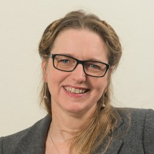
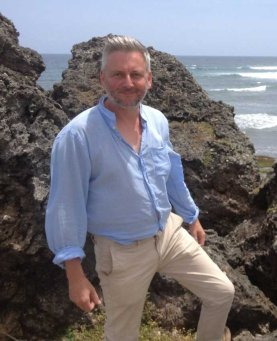
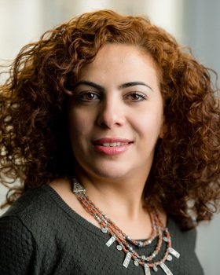
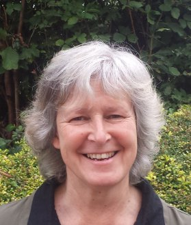
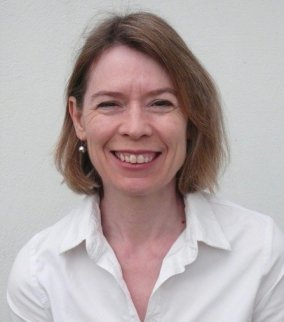
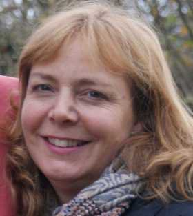

Meet the Team
Dr Christina Welch
Christina Welch is Senior Fellow in Theology and Religious Studies. She plays a leading role in the Medieval Jewish Winchester Project, working closely with Winchester City Council to rediscover Winchester’s forgotten Jewish history and heritage, and to make it accessible to the general public. She is currently also engaged in research into Jewish cemeteries in Barbados as well as locally in Winchester.
Dr Niall Finneran
Niall Finneran FSA FRAI AiFA SFHEA is Reader in Historical Archaeology and Heritage at the University of Winchester where he is programme leader for the MA in Cultural Heritage and Resource Management. Educated at the Universities of Jerusalem, Cambridge and London, he actively undertakes community heritage, archaeology and maritime ethnography/archaeology projects in Devon, East London and the Caribbean. He has directed fieldwork in the Americas, Asia, Europe and Africa.
Dr Hiba Alkhalaf
Hiba Alkhalaf is a conservation architect and holds a PhD in architecture, and MSc in architectural conservation. She has worked and taught internationally, especially in the UK and Middle East, while her research focuses on integrated heritage management, urban conservation, place identity, and sense of place. Her interdisciplinary research bridges architecture, urban conservation and sustainable development connecting the physical (buildings), meaning (people and community), and the function.
Lucy Willans
Lucy Willans is currently involved in developing community heritage engagement programmes in Barbados and North Devon and lectures on HE Early Childhood Studies and Teaching and Learning courses at Petroc College. She holds a BA in Early Childhood Studies, and an MA in Cultural Heritage and Resources Management.
Lydia Lambert
Lydia Lambert is a chartered town planner with over 25 years experience working in both the public and private sectors across London and Southern England. Lydia has a particular interest in Cultural Heritage Management and how community cultural heritage influences the environment and can inform new development through community engagement.
Tracey Churcher
Tracey Churcher has twenty years’ experience in development and facilitation of community heritage projects. Specialising in Sense of Place, she works with community groups to identify and utilise their unique identity for the benefit of locals and visitors. She has recently completed a Master’s Degree in Cultural Heritage and Resource Management.
Lucy Coleman Talbot
Lucy Coleman Talbot is on a MPhil/PhD Studentship at the University of Winchester examining the Cross Bones Graveyard in Southwark, London. She also volunteers at Cross Bones as a warden. Her work explores myth and ritual, sacred space, social justice and community heritage.